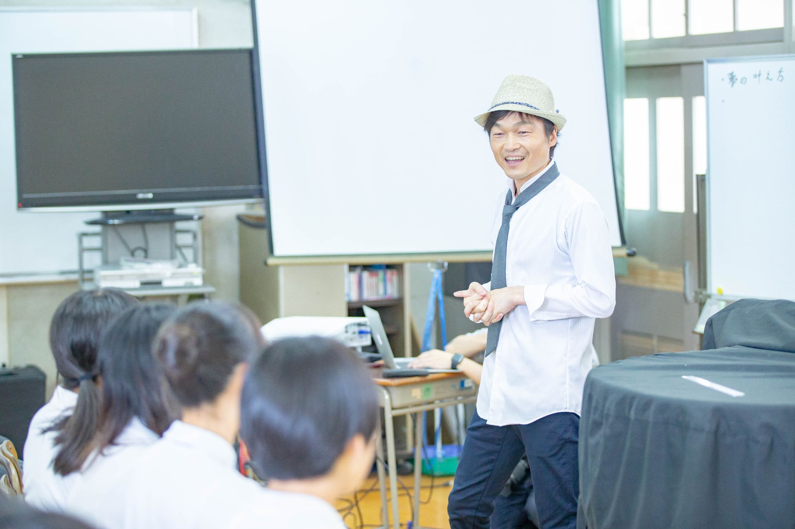

夜の寺子屋 ― 問いと対話の夜
「最近気になっていること」「本当はずっと引っかかっていること」を持ち寄る。答えがなくてもいい。問いそのものが、次の事業や生き方の入口になる。
正解も不正解もない場所で、ただ話す。ジャッジされないだけで、人は驚くほど深いところから言葉を取り戻します。
寺子屋はディールの場ではありません。肩書き・損得・評価を少し外して、人として本音で会うための場です。だからこそ、ここで生まれる対話は濃い。
「これは事実か？認知か？」天中道の視点で、経営判断や人間関係に混ざった思い込みをやさしくほどいていく。
場があたたまるのは、食卓があるから。食事を囲みながら、これからの生き方、事業の源、あり方をゆっくり言葉にしていきます。
希望者はそのまま雑魚寝で朝まで滞在可能。夜の余韻を持ったまま眠り、翌朝6時の坐禅で静けさの中に戻る。この流れまで味わうと、受け取るものが一段深くなります。
お茶を飲みながら、役割を少し外して場に入る時間。はじめての方もゆるやかに馴染めます。
「今日ここに来たのはなぜ？」から始まる短い自己紹介。役割の説明ではなく、今の自分の温度をそのまま持ち寄ります。
一緒にごはんを囲みながら、最近の違和感や気になっていることを話す時間。説明や正しさよりも、本音と実感を大切にします。
「あり方と、これからの生き方」をテーマに、本音の対話を深めます。薫ちゃんの問いかけで、自分の価値観や使命の輪郭が言葉になっていきます。
「今日持ち帰る問い」や「今の自分の言葉」を一人ずつ確認して閉じます。
ここで一区切り。朝まで参加の方は、そのままゆるやかに余韻の中で過ごせます。雑魚寝で眠り、翌朝の坐禅へつながります。
朝まで参加の方は起床。簡単なシャワー利用も可能です。
夜にほどけた感覚を、翌朝の静けさの中で整える時間。対話で開いたものを、静寂の中で自分の芯へ沈めていきます。
朝の空気とともに解散。持ち帰るのは情報ではなく、自分にとっての本音と次の一歩です。
| 日時 | 毎月第4木曜日 18:00〜22:00 直近開催: 2026年4月23日（木） / 5月28日（木） / 6月25日（木） |
|---|---|
| 場所 | 大阪・今里 Googleマップで場所を見る 大阪府大阪市東成区大今里1丁目2-24 / 今里駅3番出口から徒歩7分 |
| 定員 | 6名限定（少人数・安心できる場で） |
| 参加費 | 日帰り 5,000円（食事付き） / 朝まで参加 7,000円（朝食付き・雑魚寝） |
| 内容 | 食事を囲んでの対話 / テーマ対話 / 振り返り / 希望者は朝まで滞在可 / 翌朝6:00の坐禅 |
| 持ち物 | 特別な準備は不要。今の自分のままで来てください。 |
| こんな人に | 使命を生きたい経営者 / コミュニティリーダー / 自分の価値観を深く見つめたい人 / 本音で対話できる場を探している人 / 寺子屋という文化に惹かれる人 |
参加費は、場所の維持費・食事・光熱費・この場をひらき続けるための運営費として大切に使わせていただいています。

定員に達し次第、受付を終了します。
日帰り参加か朝まで参加かを選んでお申し込みください。
ご質問はフォームの備考欄からどうぞ。